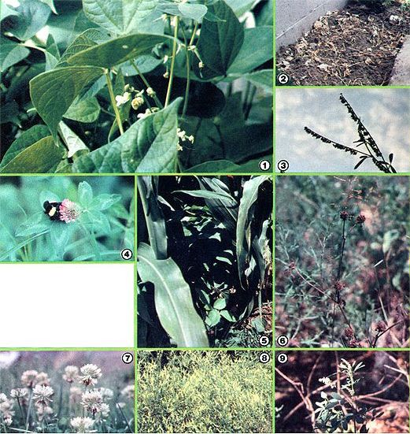

By simply planting some legumes in your garden, you can . . .
Nitrogen makes up about three-fourths of the air we breathe. Since this colorless, odorless gas is the basic building block for protein, its availability is extremely important to the plants (and animals) that feed us. Technology has developed a wide variety of nitrogen sources for agricultural use. However, there's no need to pay for such substances (many of which are the results of energy- and pollution-intensive manufacturing processes) . . . because it's easy to grow your own nitrogen!
As you may know, members of the legume family have the ability to grab free nitrogen from the air for their own use and - with the help of certain bacteria - to "fix" it in the soil, where the substance can benefit other plants. Beans, peas, clovers, and the like all possess this useful trait. So, by thinking ahead a season or two, you'll be able to put such fertility "factories" to work supplying your vegetables with this nutrient.
You can give this fall's cole plants (cabbage, broccoli, cauliflower, etc.) most of the nitrogen they'll need by putting in a spring crop of snap beans. I try to dig the bean vines into the soil while they're still green and leafy, just as production tapers off. In that way, I get beans and fertility . . . that's really double-cropping!
This year, in addition to my regular legume patch, I sowed a few extra plants in the open spaces in my corn plot. The beans are doing well, and even seem to have suffered less insect damage than did the main patch. The corn is more vigorous than in previous years, too, as a result of both the nitrogen boost and the extra soil cover.
As you can imagine, there are dozens of ways to rotate or interplant legumes with other crops . . . in order to reap both soil enrichment and food from the same ground. Many legumes make champion green manure crops as well . . . as they're among the best soil conditioners around.
Soybeans or cowpeas, if sown thickly in late summer and then dug in at frost-time, will provide rich earth for next year's early greens and such. It's really not hard to turn under the lush herbage, either: The secret is not to be finicky. Just upend a spadeful of soil at a time, covering as much greenery as you can without wearing yourself out. (The leaves that remain above the dirt will wilt and provide some extra winter soil cover.)
Canada or Alaska peas make good early "fertilizer crops" for summertime greedy-feeders. Plant them as soon as possible in the spring, and turn the vines under a few weeks before sowing the following crop. (As with all green manures, a short delay is necessary to give the succulent green matter a chance to break down and release its treasure for the vegetable to follow.)
Another legume that can be used to provide same-season nitrogen is the fava bean. (Better yet, that prolific plant is also supposed to help destroy tomato wilt in the soil!)
Any of the methods mentioned above will do a good job of improving short-term fertility in any garden plan. However, there are some other legumes that offer the potential of producing long-term supplies of nitrogen.
The most exciting addition to any garden can be clover. Yes, the same beautiful, verdant carpets that cover many a farmer's fields do have a place in your vegetable patch, whether it be large or small.
Red clover (I mean primarily the types known as "medium" or "double-cut" red) is a familiar hay crop in the North, East, and Midwest. Often used in rotation with wheat and corn, the hard-working plants can enrich the earth with substantial amounts of pure nitrogen. In fact, planting an acre in clover can equal the benefits of adding as much as 1,300 pounds of blood meal to the same area!
One way to use red clover is to insert it into your garden's rotation plan. Simply divide the plot into about five sections, and grow fertilizer on one section each year. Sow the seed - early in the spring - on a firm, well-prepared seedbed at a rate of four heaping tablespoons per hundred square feet. Rake the soil very lightly to cover the little jewels. . . and wait.
(On farms, red clover is often sown with a nurse crop, which is a planting of small grain such as oats or wheat that "nurses" the tiny seedlings - by inhibiting weed growth and holding in moisture - until they can fend for themselves. If you already use rye or wheat as a food or cover crop, it makes sense to sow your clover right into the standing grain. The nurse will give you a return from a plot that would otherwise lie "idle" that year. But a nurse crop is not essential in a home garden, and the nitrogen fixed by your clover should, itself, be considered a rewarding yield.)
During the first year, you'll pretty much leave the patch be . . . and simply mow the clover (clip only the top) in late August. Then, early in the following spring, dig in the crop, and - in a few weeks - plant a nitrogen-loving vegetable in its place.
Alfalfa, queen of the organic farm, can also have a niche in your back yard. Use it as you would red clover. Alfalfa will make a stand without a nurse crop, and may even be fall-sown in parts of the South. Since this ancient crop (it was first raised in Persia before 700 B.C.) is a perennial, you could establish a semipermanent "mulch field" by sowing an unused strip of lawn in alfalfa, and harvesting three or four crops of soil cover per season for several years. Then, when the legume thins out, plant the spot in corn!
A champion fertilizer crop, alfalfa can fix as much as 250 pounds of nitrogen per acre (depending on weather and soil conditions). Furthermore, the USDA is working on strains of this plant that may be able to provide 500 pounds per acre.
Alfalfa will fit into a rotation plan very well, but it should stay for at least two years (that is, one year longer than red clover) to assure a maximum nitrogen yield. In order to "justify" such a long residence in a small garden, I plan to try "plugging" this year's sweet corn right into the alfalfa I planted last year. I should get a crop of sugary ears and a lush legume cover at the same time.
Red clover and alfalfa are both excellent soil builders, but they may not be right for every situation. For example, is your soil mostly hardpan? Does your acreage suffer from badly eroded spots? Are you faced with the task of improving a plot of poorly drained, stiff clay? If you have those problems, you need sweet clover instead! Its powerful five- to eight-foot roots can crack hardpan, and it'll grow in places where few other plants can survive, even in the cracks of a road's shoulder. (Its only requirement is a pH of 6.5 or a bit above.) Furthermore, the "wonder clover" can provide 170 pounds of nitrogen per acre.
The most common sweet clovers are biennial whites and yellows. The white-flowered types are the bushier of the two, and thus produce more green matter to dig in. And since the roots of biennials reach their largest size in the second spring - just before the blossoms appear - that's the time to turn your crop under if you want to add maximum nitrogen to the soil.
Sweet clover is just the ticket for pioneering new garden beds, too . . . in fact, I'm using it this year, along with other clovers (see the sidebar on scrounging seed) for just that purpose. The muscular roots should make next year's double-digging easier, and improve the soil to boot.
The mulch I used this year - on the other hand - came from a good stand of grasses mixed with white and hop clovers. Harvest was as easy as mowing the lawn ... which isn't surprising, since my "nitrogen field" is my lawn.
White (or Dutch) clover is a common sight in yards and pastures throughout the North and East. The clover and bluegrass have a "thing" for each other: Each ebbs and flourishes in response to the nitrogen levels in the soil. Hop clover, with its small yellow flowers, grows naturally with white clover in many places. Both go dormant in hot, dry weather . . . so if you want to use them as mulch, do so early in the year.
Taking advantage of the green manure plants makes growing your own nitrogen easy. Remember, though, that legumes fix the most nitrogen when sown in poor soils (naturally, they don't need to work so hard in rich ground). So use them after heavy feeders ... or in troubled soil ... but USE THEM!
Providing your own nitrogen is a moneysaving, independence-building trick . . . and one that improves the soil that feeds us all!
|
 Photos by the Author [1] Peas will enrich the soil for a subsequent corn crop. [2] Bean vines ? dug into the earth ? will release nitrogen. [3] Mature sweet clover seedpods. [4] Red clover (Trifolium pratense) and a passerby. [5] Corn grows vigorously with a legume companion. [6] Harvest the brown heads of red clover for seed. [7] White clover (Trifolium repense). [8] A stand of hardy yellow sweet clover (Melilotus officinalis). [9] Wild white sweet clover (Melilotus alva). |
|
|